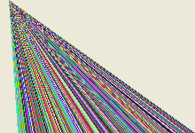

Line()
语法
Line(x, y, Width, Height [, Color])概要
Draw a line of given dimensions on the current output. The current output is set with StartDrawing().
参数
x, y The origin of the line to draw. Width, Height The dimension of the line to draw. These values include the starting point so a Height of 1 draws a horizontal line while a Height of 0 draws nothing at all. Color (optional) The color to be used for the line. 如果未指定此参数，将使用与FrontColor()设置的默认颜色。这种颜色可以使用RGB或RGBA格式。
返回值
无.
备注
To draw a line given the coordinates of the start- and end point, use the LineXY() function.
示例
If OpenWindow(0, 0, 0, 200, 200, "2DDrawing Example", #PB_Window_SystemMenu | #PB_Window_ScreenCentered) If CreateImage(0, 200, 200) And StartDrawing(ImageOutput(0)) Box(0, 0, 200, 200, RGB(255, 255, 255)) For Width = 1 To 180 Step 5 Line(10, 10, Width, 180, RGB(Random(255), Random(255), Random(255))) Next Width StopDrawing() ImageGadget(0, 0, 0, 200, 200, ImageID(0)) EndIf Repeat Event = WaitWindowEvent() Until Event = #PB_Event_CloseWindow EndIf

参阅
LineXY(), Box(), RoundBox(), Ellipse(), Circle() FrontColor(), RGB(), RGBA()
已支持操作系统
所有